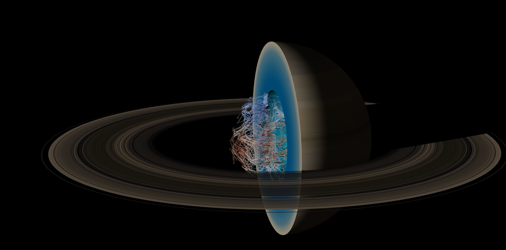

Planetary Science with Blender
In order to have ready-made images for press and outreach activities, I spent a weekend learning about Blender and rendered some output from a supercomputer simulation of a planetary magnetic field in the core of Saturn.
